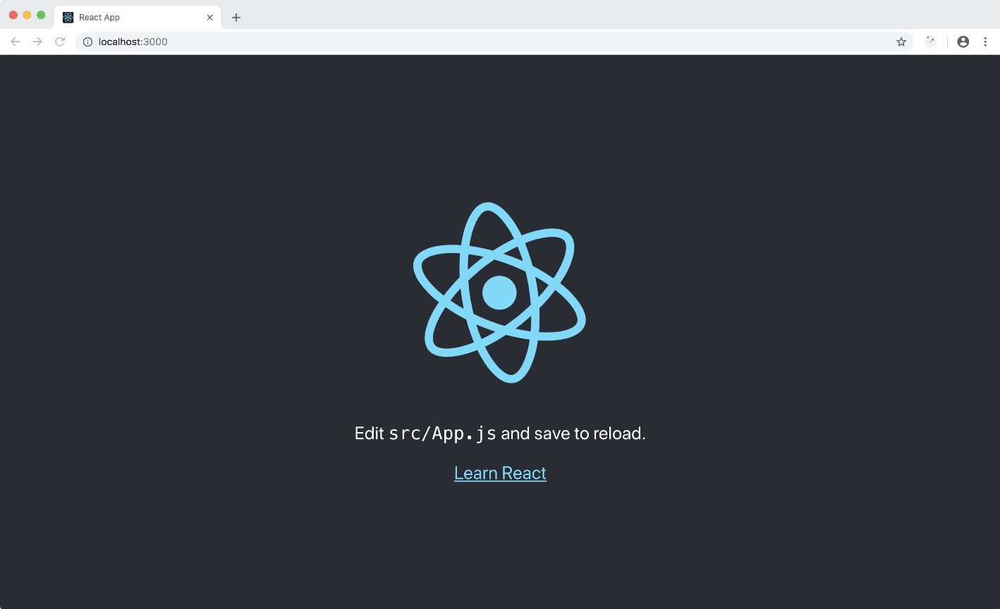

Create React App > Universal
In this step-by-step tutorial you are going to take a Create React App (CRA) app, and turn it into a fully featured Universal PWA with server-side rendering, served by an ExpressJS server.
NOTE:
If you just want to enjoy a ready-to-use and feature-rich app, type this in a terminal:
npx forrest run my-new-universal-cra -p 8080
Step n.1 - Kickoff your CRA
Initialize a new CRA project (*):
npx create-react-app my-new-universal-cra && \
cd my-new-universal-cra
Step n.2 - Add a few Dependencies
Now install some ForrestJS modules:
(I personally use yarn because is much faster than npm)
yarn add @forrestjs/package-universal && \
yarn add @forrestjs/package-universal-dev -D
The
package-universalcontains a set of common dependencies like React, Express, react-router, ect... We work hard to keep all the internal versions up-to-date so you can enjoy and update just this package :-)
About NPM Scripts
So far we just installed dependencies so the basic package.json scripts that were created
by create-react-app are in place with their default behaviour.
This will not change during the course of this tutorial :-)
I really like the idea of having a common ground in create-react-app (even if I
don't share all the decisions they made!) and I did my best to provide a simple
way to enrich that basic ground without breaking it.
With all that said, you can spin up your app:
npm start

Step n.3 - Let's Server-Side Render!
In order to implement SSR with ForrestJS you are going to need 3 things:
- A Sever-Side entry point for your App
- A NodeJS server - we'll use ExpressJS
- Some @babel support for our server side code (I love ES6, you?)
Server-Side Entry Point
Create the App's server side entry point:
vi src/index.ssr.js
and paste this code into it:
import { createSSRRender } from '@forrestjs/core/lib/create-ssr-render'
// project specific modules
import App from './App'
import './index.css'
export const staticRender = createSSRRender(App)
Modular NodeJS Server
Create the Express server entry point:
vi server.js
and paste this code into it:
// Makes NodeJS understand ES6
process.env.NODE_ENV = 'development'
require('@babel/polyfill')
require('@babel/register')
// List our server capabilities
const services = [
require('@forrestjs/service-express'),
require('@forrestjs/service-express-ssr'),
]
// Start the app
require('@forrestjs/hooks')
.runHookApp(services)
.catch(err => console.log(err.message))
👉 Click here to learn more about how we use Hooks »
Babel up and Go!
Edit your package.json:
vi package.json
and add the babel section and the serve script:
"babel": {
"presets": [
"@forrestjs/babel-preset-universal"
]
},
"scripts": {
"serve": "yarn build && node server.js",
...
}
It's finally time to run the App:
yarn serve
You should now be enjoying a server-side rendered Create React App (or CRA-SSR for the whom who
like acronyms :-).
It looks exactly like the client side rendered that you get with yarn start, but it's
server-side rendered. You can look at the page's source and spot some content within the HTML.
This is going to be a hell of an improvement if you are targeting Google's bot as a steady visitor of your website/PWA.
In the next lesson you are going to fix some headers and add some routes.
Download
If you experienced any trouble following the steps above, download this tutorial codebase here.
(*) react-scripts-rewired
Most of the examples work with the default setup, but when it comes to the server side rendering of an application that implements code splitting with react-loadable you are goint to need to make a small fix to the default Webpack configuration.
I usually use react-scripts-rewired
which implements a light extension of the default react-scripts package and allows
our project to extend the default configuration:
npx create-react-app cra-ssr --scripts-version react-scripts-rewired
If you have already created your app, you should simply switch from
"react-scripts": "3.0.1"
to:
"react-scripts-rewired": "3.0.1--latest1",
(react-scripts-rewired follows (give or take) the same version of react-scripts)